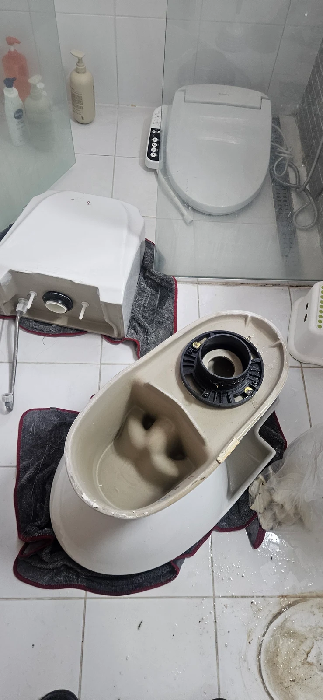
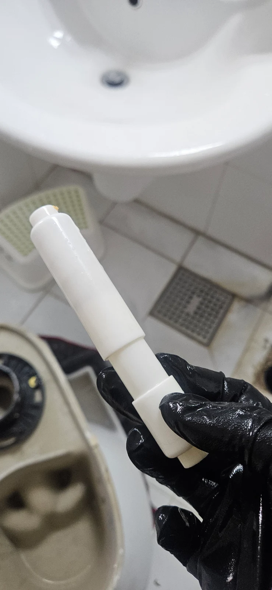

의정부시 신곡동, 변기막혔을때 현장과 확인한 원인
의정부시 신곡동에서 변기가 막혔을 때 무엇을 알려야 할지 막막하다면 현재 증상과 들어간 물건을 먼저 정리해보세요. 이번 변기막힘 사례는 확인한 원인과 작업 대상을 설명하는 데 도움이 되는 실제 현장 기록입니다.
경기도 의정부시 신곡동에서 휴지걸이 봉이 변기 안으로 떨어져 변기막힘 작업을 진행했습니다. 화장지 가운데를 받쳐 주는 지지 부품이 빠진 상황이었으며, 신라건축설비는 변기를 탈거하고 뒤집은 뒤 에어건으로 봉을 꺼냈습니다. 원인 물체 회수에 이어 재설치와 주변 마무리를 진행하고 정상 통수까지 확인한 현장입니다.
이번 변기막힘의 대상은 변기였습니다. 종이 휴지가 많이 들어간 상황과 달리 형태가 있는 부품이 빠졌으므로, 물이 내려가는 모습만으로 부품이 없어졌다고 판단할 수는 없습니다. 떨어진 물건을 밖으로 회수하는 과정과 사용 가능한 상태로 복구하는 과정을 함께 살펴야 하는 사례입니다. 상담에서도 물건이 빠졌다는 사실을 먼저 알려주면 작업 대상을 이해하는 데 도움이 됩니다.
1단계: 변기 탈거와 에어건 작업 준비
신곡동 현장에서는 변기를 분리해 내부 물체에 접근했습니다. 탈거 사진에는 분리한 변기와 물탱크가 매트 위에 놓인 모습이 보입니다. 도기를 옮기는 과정이 포함되므로 놓을 공간과 주변 설비를 함께 살피는 것이 필요한 작업입니다. 변기를 떼어냈다는 사실 자체가 해결 결과는 아니며, 그다음에 봉을 꺼내는 과정이 이어져야 합니다.
이번 변기막힘 작업은 분리한 변기를 뒤집은 상태에서 진행했습니다. 뒤집으면 하부 배출구 쪽에 접근할 수 있어 설치된 상태와 작업 방향이 달라집니다. 같은 봉이 들어갔더라도 모든 현장에 동일한 작업을 적용하는 것은 아니지만, 이 현장에서는 탈거와 뒤집기를 거쳐 에어건을 사용하는 방식으로 처리했습니다.
에어건은 봉을 제거하는 단계에 사용했습니다. 물체가 들어갔을 때는 형태와 접근 가능한 방향이 작업 방법을 이해하는 중요한 정보입니다. 변기막힘 상담을 할 때 빠진 부품의 모양이나 비슷한 부품 사진이 있다면 함께 전달해주세요. 물체를 정확히 설명하기 어렵더라도 휴지걸이에서 빠졌다는 위치 정보는 도움이 됩니다. 직접 확인하지 못한 내부 상태를 추측해 말할 필요는 없습니다.

2단계: 휴지걸이 봉 회수와 재설치
탈거한 변기에 에어건 작업을 진행해 휴지걸이 봉을 밖으로 꺼냈습니다. 회수 사진에는 길쭉한 흰색 지지 부품이 보입니다. 이번 변기막힘 처리에서 확인할 수 있는 핵심 증거는 변기 안으로 들어간 봉이 실제로 외부에 회수됐다는 점입니다. 물체의 위치만 바뀐 상태와 밖으로 제거된 상태를 구분해 작업 결과를 살펴볼 수 있습니다.
봉을 꺼낸 다음에는 변기를 다시 설치했습니다. 제거 작업으로 접근했던 설비를 원래 사용할 수 있는 상태로 돌려놓는 단계입니다. 주변 마무리도 깔끔하게 정리했습니다. 봉을 꺼내는 작업에 이어 분리했던 변기를 다시 설치하고 주변을 정리하는 과정까지 포함해, 이후 사용 상태를 확인할 수 있도록 마무리했습니다.
재설치 후에는 물을 내려 정상 통수를 확인했습니다. 변기막힘 작업은 원인 물체 제거와 마지막 배수 확인이 연결되어야 전체 흐름을 이해하기 쉽습니다. 특히 분리했던 변기는 다시 설치된 상태에서 확인하는 것이 중요합니다. 이 현장의 완료 결과는 봉을 회수하고 재설치한 뒤 물이 정상적으로 내려가는 상태를 확인했다는 것입니다.

작업 결과와 재발 방지·상담 안내
의정부시 신곡동 변기막힘 현장은 휴지걸이 봉을 꺼낸 뒤 재설치와 마무리, 정상 통수 확인으로 끝났습니다. 사용 중 떨어질 수 있는 작은 부품도 변기 안으로 들어가면 별도의 제거 작업이 필요할 수 있습니다. 평소 휴지를 교체할 때는 변기 뚜껑을 닫고, 분리한 봉을 변기 가장자리 대신 안전한 곳에 놓아두는 것이 좋습니다.
변기가 막혔을 때에는 계속 물을 내리기보다 현재 배수 상태와 떨어진 물건이 있는지부터 확인해주세요. 휴지걸이 봉이 빠졌다는 사실을 알고 있다면 변기 뚫는 업체에 바로 전달하고, 이미 시도한 방법도 함께 알려주시면 됩니다. 신곡동 변기막힘 상담에서는 위치와 증상, 물체의 종류를 정리하면 현장에서 확인해야 할 내용을 설명하기 쉬워집니다.
작업 범위를 안내받을 때는 이물질 제거 외에 탈거와 재설치, 주변 마무리, 통수 확인이 포함되는지 살펴보세요. 금액이나 장비 이름 한 가지만 비교하기보다 실제로 어떤 설비에 접근하고 어디까지 복구하는지 확인하면 작업 내용을 이해하는 데 도움이 됩니다.
변기막힘 상담 전에는 배수가 불편한 위치와 발생 상황을 메모해두면 좋습니다. 무엇을 넣었는지 확실하지 않다면 추측을 확정하지 말고, 확인한 내용과 이미 시도한 방법만 전달해주세요.
최종 조치: 휴지걸이 봉 회수 후 변기 재설치와 주변 마무리를 완료하고 정상 통수를 확인했습니다.
현장 방문 전 확인하는 비용과 작업 범위
신라건축설비는 현장 증상과 배관 구조를 확인한 뒤 필요한 작업과 예상 비용을 안내합니다. 단순 관통으로 해결되는지, 배관내시경·석션·고압세척 또는 변기 탈거가 필요한지는 현장 상태에 따라 달라집니다. 출장비와 야간 작업비, 추가 장비 비용이 발생할 수 있는 경우 작업 전에 먼저 설명하고 동의를 받은 범위에서 진행합니다.
업체를 선택할 때 확인할 사항
무조건적인 ‘0원’ 표현보다 실제 작업 범위, 추가 비용 조건, 사용 장비와 사후 대응 기준을 확인하는 것이 중요합니다. 해결되지 않았을 때의 비용 기준과 작업 후 동일 증상 발생 시 점검 범위를 사전에 문의해두면 불필요한 분쟁을 줄일 수 있습니다.
의정부시 변기막힘 자주 묻는 질문
변기막힘은 왜 반복되나요?
의정부시 신곡동 현장처럼 휴지걸이 봉이 변기로 떨어져 발생한 배수 장애 증상은 원인이 현장마다 다를 수 있습니다. 변기 내부 이물질뿐 아니라 하부 오수관 막힘이나 배관 상태 때문에 반복될 수 있습니다. 같은 변기막힘이 재발하면 막힌 위치와 원인을 다시 확인하는 것이 중요합니다.
변기 물이 안 내려가거나 역류하면 변기뚫는업체를 불러야 하나요?
물이 천천히 내려가거나 수위가 차오르고 변기역류가 반복되면 단순 뚫어뻥보다 전문 장비 점검이 필요한 경우가 있습니다. 현장에서는 증상과 배관 구조를 먼저 확인합니다.
변기 이물질 막힘은 변기를 탈거해야 하나요?
물티슈·청소포·플라스틱·음식물처럼 변기 트랩에 걸린 이물질은 위치에 따라 변기 탈거가 필요할 수 있습니다. 무조건 탈거하지 않고 먼저 막힘 위치를 판단합니다.
변기뚫는업체는 어떤 장비로 작업하나요?
현장 상태에 따라 석션, 에어건, 배관내시경, 변기 탈거 등을 사용합니다. 하부 오수관 문제라면 변기만 뚫는 작업보다 배관 구간 확인이 중요합니다.
변기막힘 비용은 어떻게 정해지나요?
단순 관통인지, 이물질 제거와 변기 탈거가 필요한지, 오수관이나 공용배관 작업이 필요한지에 따라 달라집니다. 추가 장비나 작업이 필요하면 진행 전에 범위와 비용을 안내합니다.
변기에서 냄새가 나거나 물이 자주 차오르는 것도 막힘과 관련 있나요?
악취나 수위 이상이 항상 막힘 때문인 것은 아니지만 배수 불량, 오수관 상태, 연결부 문제와 함께 나타날 수 있습니다. 반복되면 현장 점검으로 원인을 구분해야 합니다.
변기막힘 서울·경기 출동지역
신라건축설비는 의정부시 신곡동 현장을 포함해 서울 25개 구와 경기도 31개 시·군의 배관 문제를 상담합니다. 현장 거리와 기사 배정 상황에 따라 출동 가능 여부를 먼저 안내드립니다.
서울 전 지역
강남구 · 강동구 · 강북구 · 강서구 · 관악구 · 광진구 · 구로구 · 금천구 · 노원구 · 도봉구 · 동대문구 · 동작구 · 마포구 · 서대문구 · 서초구 · 성동구 · 성북구 · 송파구 · 양천구 · 영등포구 · 용산구 · 은평구 · 종로구 · 중구 · 중랑구
경기도 주요 출동지역
수원시 · 용인시 · 고양시 · 화성시 · 성남시 · 부천시 · 남양주시 · 안산시 · 평택시 · 안양시 · 시흥시 · 파주시 · 김포시 · 의정부시 · 광주시 · 하남시 · 광명시 · 군포시 · 양주시 · 오산시 · 이천시 · 안성시 · 구리시 · 의왕시 · 포천시 · 양평군 · 여주시 · 동두천시 · 과천시 · 가평군 · 연천군